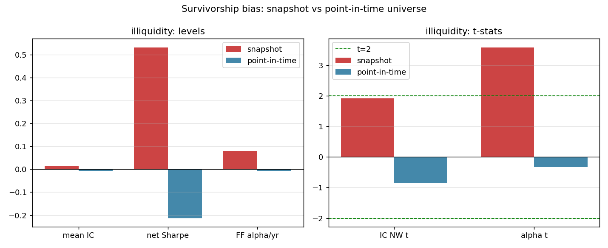
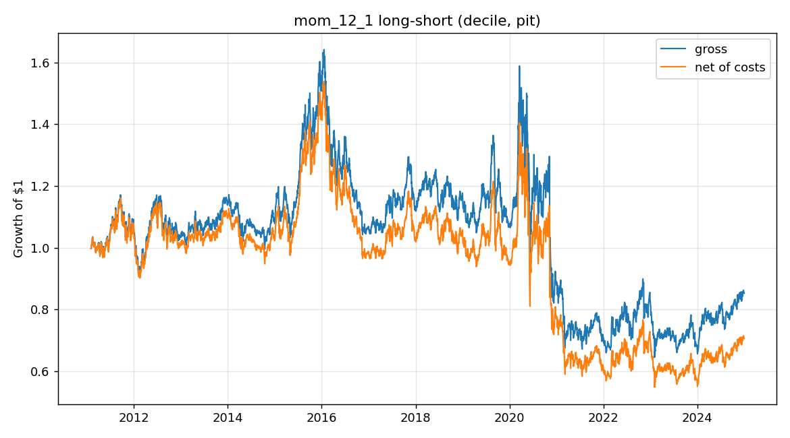
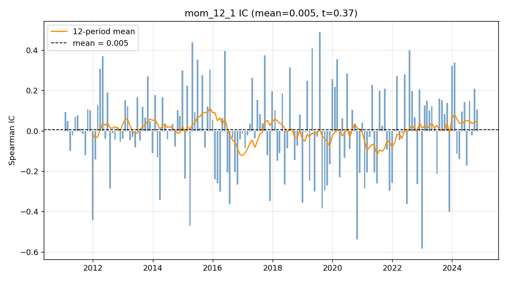
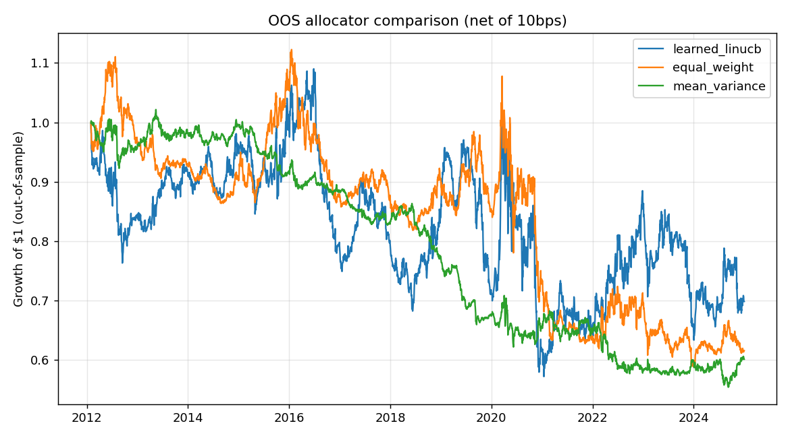

Best signal
12–1 momentum
decile, dollar-neutral
A point-in-time backtesting study of six classic price/volume signals on the S&P 500, evaluated with the statistical discipline a quant researcher would demand — and an honest null result.
Six well-documented signals (12–1 momentum, short-term reversal, low & idiosyncratic volatility, 52-week-high proximity, illiquidity) are formed into dollar-neutral long–short portfolios and evaluated on a point-in-time S&P 500 universe (2010–2024) with transaction costs, purged/embargoed walk-forward CV, Newey–West IC t-stats, factor-neutral alpha, and a multiple-testing-corrected deflated Sharpe ratio. On a naïve current-snapshot universe, an illiquidity signal appears to earn a +8.0%/yr factor alpha (t ≈ 3.6); under point-in-time membership that alpha collapses to −0.7%/yr (t ≈ −0.3) — it was survivorship bias. After costs, multiple testing, and survivorship control, no signal earns a statistically credible return (best deflated Sharpe 0.35 < 0.5).
Point-in-time S&P 500 · 614 of 805 ever-members usable · 2010–2024 · monthly rebalance · 10 bps/side · selection across 12 configurations.
Every signal's net Sharpe is ≈ 0 or negative; the deflated Sharpe — which corrects for trying 12 configurations — is below 0.5, i.e. it is less than a coin flip that the true Sharpe beats the multiple-testing benchmark. Simply holding the equal-weight market (excess Sharpe +0.86) beat every long–short. The conclusion is frequency-robust (deflated Sharpe 0.35 daily vs 0.30 monthly).
Same methodology; only the universe changes (today's snapshot → point-in-time membership). The signal that looked best was a survivorship artifact.
| Metric | Snapshot (biased) | Point-in-time | Δ |
|---|---|---|---|
| Mean IC | +0.0153 | −0.0060 | −0.0213 |
| IC Newey–West t | +1.92 | −0.84 | −2.77 |
| Long–short Sharpe (net) | +0.53 | −0.21 | −0.74 |
| FF5 + momentum alpha | +8.0%/yr | −0.7%/yr | −8.7 pp |
| alpha t-stat | +3.59 | −0.33 | −3.92 |
The snapshot even manufactured a +1.27 pre-2020 illiquidity Sharpe; point-in-time, the selected signal's pre-2020 Sharpe is +0.05. The "edge" was the bias.

I started this to understand how quant researchers actually decide whether a signal is real, rather than whether it merely looks good in a backtest. I took six classic signals, turned each into a dollar-neutral long–short portfolio, and tried to evaluate them as honestly as I could.
The most useful lesson came from a mistake I almost made. On a universe of today's S&P 500 members, the illiquidity signal looked genuinely good — a +8%/yr alpha at t ≈ 3.6. It would have been easy to write that down as a finding. But that universe only contains companies that survived and stayed in the index, so I rebuilt the study on point-in-time membership (the constituents as they actually were on each date, including those later dropped or delisted). The alpha disappeared. That one before/after comparison taught me more than any positive result would have.
The second lesson was statistical honesty: because I tried twelve configurations and picked the best, I learned to discount the Sharpe with a deflated Sharpe ratio — and once I did, nothing was significant. Being able to reach and report that null is, I think, the actual skill.
12–1 momentum, dollar-neutral long–short, net of 10 bps/side costs — essentially flat.


A LinUCB / Thompson-sampling bandit learns to allocate across the signals, trained walk-forward with the same no-leakage discipline.
| Method | OOS net Sharpe |
|---|---|
| Learned LinUCB contextual bandit | −0.05 |
| Equal-weight combination | −0.23 |
| Mean–variance combination (point-in-time) | −0.56 |
All three allocators lose money out-of-sample. The learned bandit is the least-negative, but a negative Sharpe is not a win — there is no profitable combination to find once the bias is removed.

Every number above comes from a command on freely downloaded data — nothing is hardcoded.
# install pip install -r requirements.txt # headline study (point-in-time) and the old survivorship-biased run python -m experiments.run_baseline --universe pit python -m experiments.run_baseline --universe snapshot # survivorship before/after, RL allocator, and an independent re-derivation python -m experiments.run_comparison python -m experiments.run_rl --universe pit --learner linucb python -m experiments.verify_headline --universe pit # rigor tests (look-ahead, costs, CV purge, IC sign, point-in-time membership) pytest -q